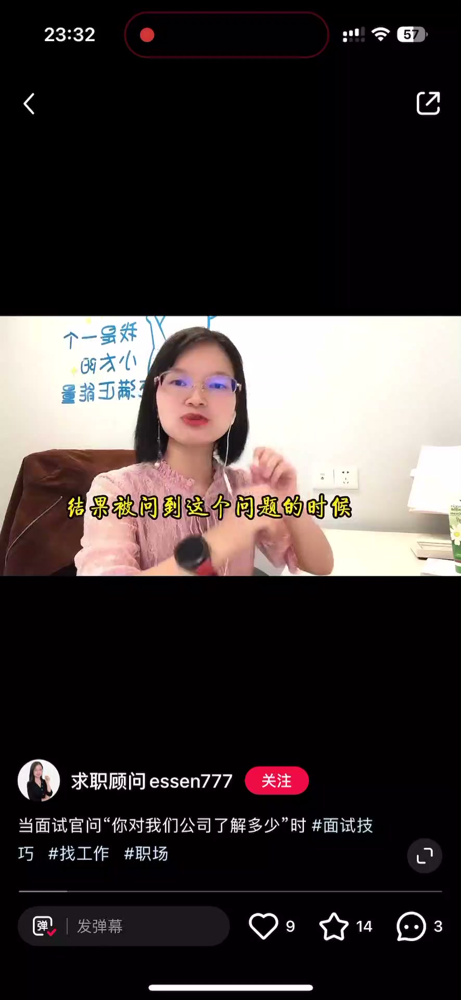
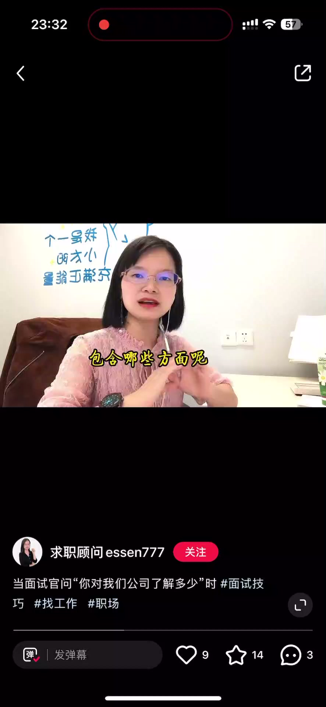
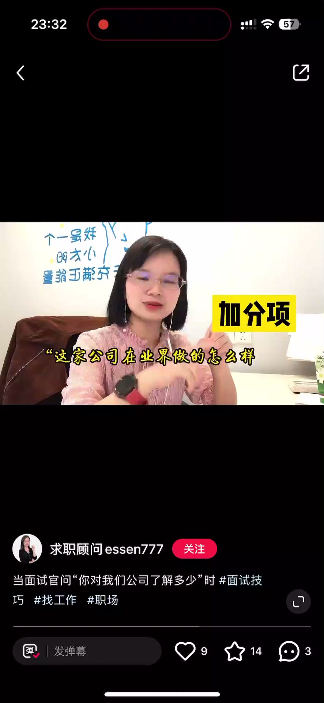
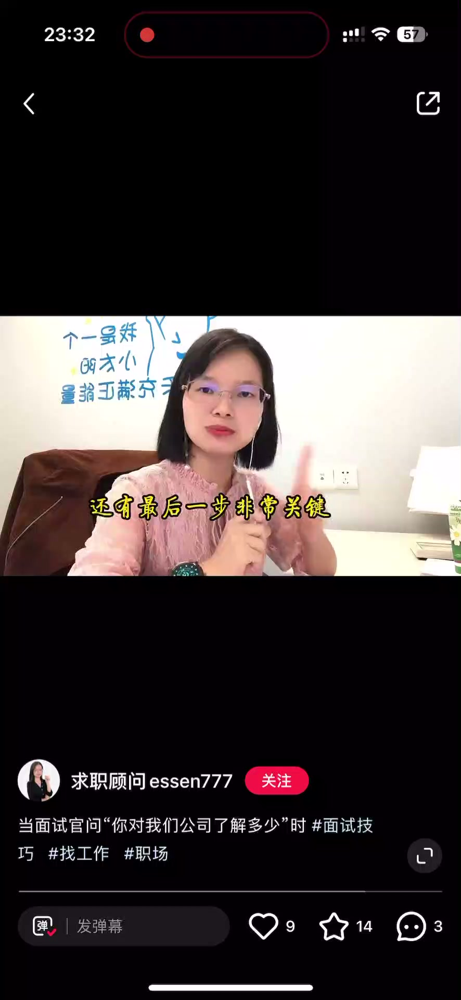
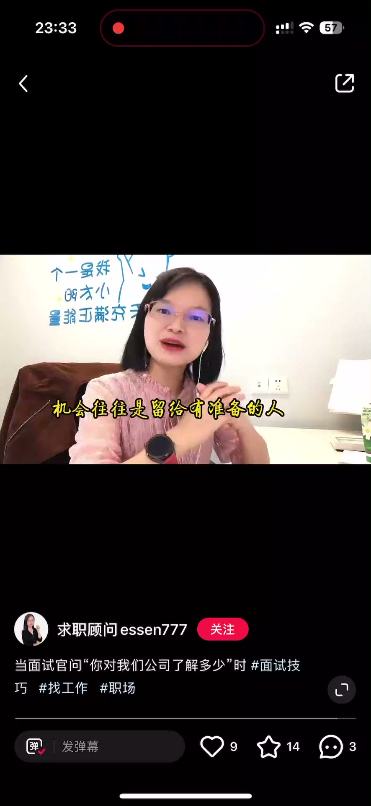

内容要点
一段 1 分多的面试准备课：「你对公司了解多少」是面试必考题，回答不好直接影响面试结果。视频把公司调研拆成三个基础项加三个加分项——基础项搞清楚行业业务盈利模式、产品服务类型、产品服务特点，加分项搞清业绩口碑、竞争对手、相对竞品的优劣势；最后一步是明确自己对这家公司的兴趣点，因为机会往往留给有准备的人。
知识结构
被问到却说「我不太了解你们公司」，等于直白告诉面试官三个信息：你不重视这场面试、对这家公司兴趣一般、没有认真对待找工作这件事。
基础一：公司属于什么行业、做什么业务、盈利模式、成立多久、规模；基础二：有哪些产品/服务、类型有哪些；基础三：产品/服务有哪些特点。
加分一：业绩做得怎么样、口碑；加分二：竞争对手有哪些；加分三：相对竞品，公司产品的优势和劣势。最后明确自己为什么对这家公司有兴趣、愿意来面试。
「你对公司了解多少」答的是三个基础项（行业业务、产品类型、产品特点）加三个加分项（业绩口碑、竞对、优劣势），再用「为什么我对这家公司感兴趣」收尾。
00:00-00:24必考题答不好直接丢分
开场点题：公司了解多少是这次面试的必考题，这问题回答不好会直接影响你的面试结果。虽然它相当于开卷考试，但还是有不少小伙伴丢分。
接到面试邀约就兴冲冲跑过去，被问到这个问题时只能说「我确实不太了解你们公司，你们约我面试我就过来了」——这就等于很直白地告诉面试官三个信息：你不重视这场面试，你对这家公司兴趣很一般，你没有很认真对待自己找工作这件事。
当然，有些公司对外公开的信息非常有限，调研难度大，更需要方法论。

00:25-01:18三个基础项＋三个加分项
先看基础项。基础项的第一问：公司属于什么行业、做什么业务、盈利模式是什么、成立多长时间了、现在规模怎么样；基础项的第二问：它有哪些产品或服务、类型有哪些；基础项的第三问：它的产品或服务都有哪些特点。
再看加分项。加分项的第一个维度：这家公司业绩做得怎么样、口碑怎么样；加分项的第二个维度：它的竞争对手有哪些；再看第三个加分项：不仅了解竞争公司有哪些，还了解相对于竞品，这家公司产品的优势有哪些、劣势有哪些。
最后一步非常关键：明确清楚自己为什么对这家公司有兴趣、愿意来面试。往往面试官问你了解公司多少，其实是想问你对公司哪些方面感兴趣。机会往往是留给有准备的人，不辜负每一场面试，不放过任何一种可能。




完整转录（58段）
以下文本由 Whisper medium 模型自动转录，可能存在少量识别误差，已尽可能修正。
公司了解多少呢
这次面试的有必考题
这问题回答不好
会直接影响你的面试结果
虽然这个问题相当于是开转考试
但是还是会有不少小伙伴丢分
接到面试邀约就性重重的跑过去面试
结果被问到这个问题的时候只能说
我确实不太了解你们公司
你们用我的面试我就过来了
这就等于很直白的告诉面试官三个信息
你不认识这场面试
你对这家公司兴趣很一般
你没有很认真的对待自己找工作这件事
当然如果说公司
它因为本身对外部公开的这种信息
非常有限很少
三个基础项
再加三个价品项
先看基础项
基础项的第一问就是要搞清楚
公司它是属于什么行业
然后做什么业务
它的盈利模式是什么样子的
产地多长时间了
现在规模怎么样
基础项的第二问就是你要搞清楚
它有哪些产品或者服务
就是它的类型有哪些
基础项的第三问就是你要清楚
它的产品或者它的服务
都有一些什么样子的特点
再看价分项
价分项的第一个纬度就是你搞清楚了
这家公司它在业绩做得怎么样
口碑怎么样
价分项的第二个纬度就是
你了解清楚了
这家公司它的竞争对手有哪些
再看第三个价分项
你不仅了解了这家公司
它的竞争公司有哪些
而且你还了解了相对于竞品
这家公司它的产品的优势有哪些
劣势有哪些
好 我们在了解了上一期信息之后
还有最后一步非常关键
千万不要忘了
就是要明确清楚自己
为什么对这家公司有兴趣
愿意来面试
因为往往面试官问你了解公司多少
这才是另外一个问题
就是你对我们公司哪些方面是有兴趣的
机会往往是留给有准备的人
不辜负每一场面试
不放过任何一种可能
加油